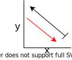

Dependencies, Arrows and Confusion
- AST
- Syntax Dependency (Blue)
- OO
- Semantic Dependency (Red)
- Semantic Modification (Purple)
- Math
- Function Map (Black)
1 Syntax Dependency are AST in FP
def plus(x,y):
return x + y- plus is pure
- plus is pass-by-value
- plus does not modify args, x y
Blue arrows = Syntax Dependency
Blue arrows DO NOT represent Semantic Dependency
In OO, the same diagram does not exist because the arrows now represent object dependency.
Therefore plus does not have an object dependency diagram.
2 Semantic Dependency
Arguments to functions are NOT semantic dependencies even though they are syntax dependencies.
B is orange meaning it has a possibility of mutation
- Semantic Dependency Test
- “Does Changing B cause a Change in A?”
- “If we remove B does A cease to exist?”
- Does B have a possibility of mutation?
- What if B can’t mutate? We don’t even need to show dependency because this is just pure FP.
Red arrows = Semantic Dependency
Another way to represent this is nested codeblocks like below.
class A{ // A -> B
B = new B;
}
class B{ // B -> C
C = new C;
}
A = new A;- If we mutate object C, mutation propagates to B then to A
- Mutation propagates from INNER to OUTWARDS which is reverse direction of dependency.
- Semantic dependency REQUIRES the object it points towards to have a possibility of mutation.
- A –> B means B must be an object that is capable of mutating
- Counter Example, if this wasnt the case, all pure functions would have Semantic dependencies which is WRONG.
WRONG because this is a pure function, meaning Domain will never mutate.
2.1 Arrays , Function Map vs Dependency Duality misconception
An array is simply a function.
OO Objects can be modeled as functions.
f[0] = 6
f[1] = 3
f[n] = ..\[ Index \overset{f}{\mapsto} Value \] \[ \xcancel{Index {\color{red}\underset{depends}{\leftarrow}} Value} \]
Duality between Function Map and Semantic Dependency is WRONG
Chart showing Independent Variable(x) vs Dependent Variable(y)
\(x\mapsto y\)
 The red arrow is wrong! Why? the semantic depends relation is based upon the fact that the object it points to can mutate. Can x mutate? NO, 1 is 1, 2 is 2 and will always be 2.
PURE FUNCTIONS DO NOT HAVE SEMANTIC DEPENDENCIES!
Or more precisely there is no point in showing semantic dependencies.
Black arrows = Function map
2.2 Functional method to simulate OO objects
Record_A bobby{name:"bob",age:3}
String name(x):
return x.name
Nat age(x):
return x.age
name(A) //"bob"Notice no semantic dependency. This is the reason FP doesn’t require dependency injection.
2.2.1 Comparing with OO version
- Notice in OO, we wouldn’t see the entire Domain, Nat and String but the objects age and name.
- The objects age and name would also be inside the object A
class age{...}
class name{...}
class A{
myAge = new age()
myName = new name()
}
A.myAge //projection3 Read/Write arrow
3.1 Write-To
void plus(&x,&y,&z):
z = x + yPurple arrows = Write-To
Write-To Test vs Semantic Dependency
- The target does not depend on the modifier, aka the target can still exist if the modifier is gone
- “z” does not semantically depend on plus.
- “z” will still exist even if “plus” does not exist
- “z” does not semantically depend on plus.
Tidbit: Passing x,y by reference is same as pass-by-value if we don’t modify the values.
void plus(&x,&y,&z) is effectively the same as void plus(x,y,&z)
3.1.0.1 := is a Meta Write-To
x := 53.2 Read To
n = 5
f = lambda x : print x3.3 Pointers
Everything in memory is just one big array
Arrays are just functions
Everything in memory is just one big function
\[ Address \rightarrow Value \] \[ Pointer \rightarrow Address \rightarrow Value \]
- \(Address\) really means the domain of all valid addresses, same for \(Pointer, Value\).
Semantic Dependency Test: If we change pointer, does the address and value change? YES
If we change address, does the value change? YES
Value Depends on Address, we have to check does Address have the possibility of mutation? Tricky question.
Mutation includes object creation.
Addresses are isomorphic to variable names.
So whenever we initialize a new variable, we are causing a mutation. So Yes.
A pointer can semantically modify the object it points to but it is not dependent on the object it points to.
- Pointer can modify Address (purple)
- Mutated Address propagates change to Value
3.4 Linked Lists, recursive dependency
class linkedlist{
int head = data;
linkedlist* next = &second
}